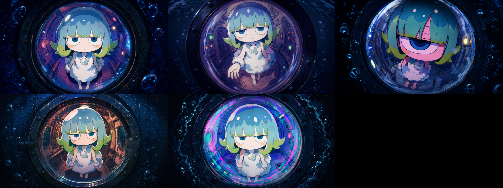
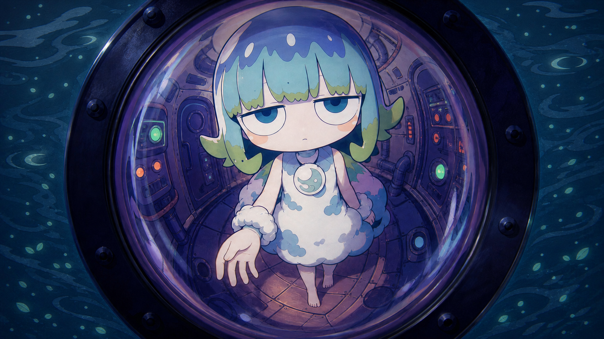
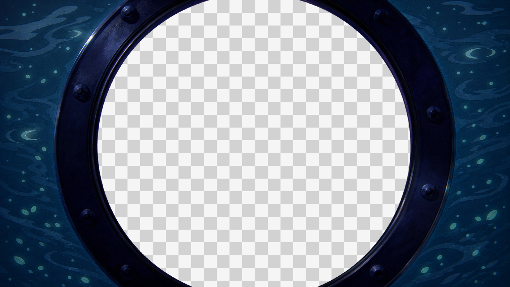
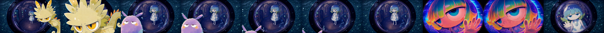
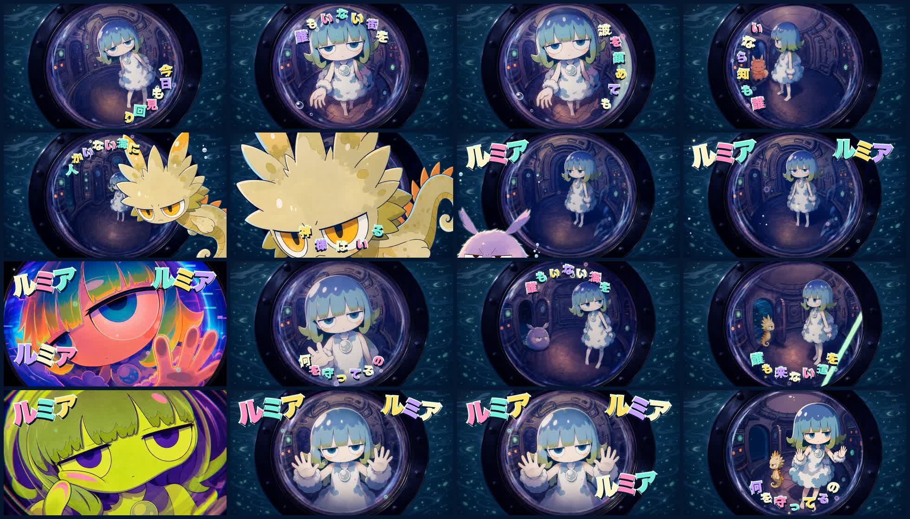
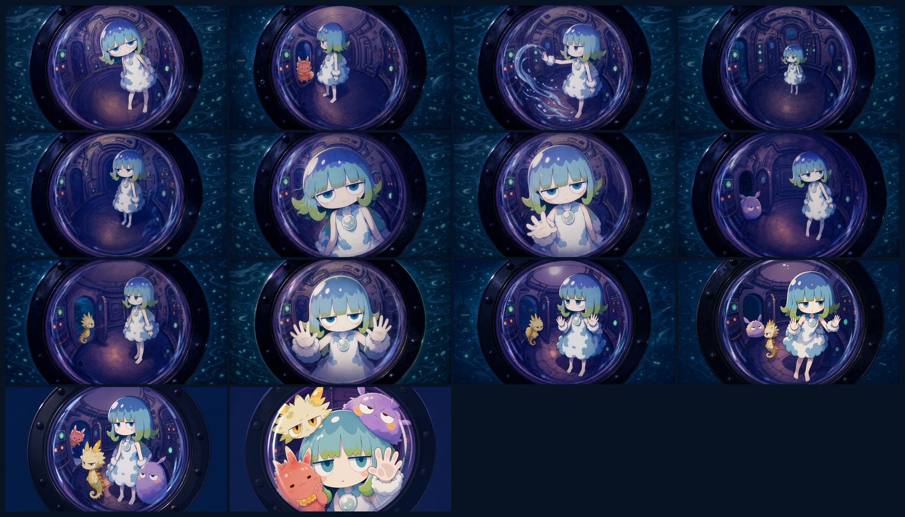

コンテスト要件
コンテスト作品の工程記録は、アイデアではなく応募条件から始める。何を作ったかと同じ重さで、何を守り、どこへ、どの順で提出したかを残す。
23:59
| 項目 | 要件 | 本作での扱い |
|---|---|---|
| お題 | 『ルミアと始まりの海』のキャラクターまたは世界観を使った30秒動画 | 必須／確認済み |
| 提供素材 | ルミア、クルル、ポワン、プクリの設定画、環境資料、タイトルロゴ等 | 公式画像を生成参照に使用 |
| 表現の自由 | 新キャラ、新情景、戦闘、掛け合い、ジャンル再構成が可能。全員出演は不要 | ルミア中心＋従者3体へ集約 |
| 商用利用 | 不可 | 遵守 |
| 禁止事項 | 公共良俗に反する表現、過度に暴力的な表現 | 該当表現なし |
| 参加特典 | 条件達成者へ2,000 Tapies | 企画情報 |
| 優秀作品 | 2名、各10,000 Tapies相当 | 企画情報 |
| 必須表記 | @TapNow_AI @TapNow_JP #ルミアと始まりの海 | X投稿時に使用 |
次回の公募で最初に回収する情報
- 公式要項URL、公開日、更新日、確認日
- 締切の時刻とタイムゾーン
- 尺、比率、コーデック、容量などの納品仕様
- 提供素材の必須使用条件と改変可能範囲
- AI生成、楽曲、声、フォント、IPの権利条件
- 禁止表現、守秘、プラットフォーム規約
- 作品名、説明文、メンション、タグなどの必須表記
- 投稿順、URL、ID、フォーム項目、完了証跡
完成映像
『ルミア』完成版／Web確認用720p
- 作品名
- ルミアとその仲間たち『ルミア』
- 形式
- オリジナル楽曲による30秒ミュージックビデオ
- 音楽
- 29.80秒／48kHz／BPM180
- 中核ツール
- Claude Code、Codex、Suno、SeaDance 2.0、Higgsfield、Remotion、DaVinci Resolve、TapNow
問いは歌詞に。
答えは映像に。
誰も呼んでくれないから、
自分で自分の名前を呼ぶ。
守り神の職務
人類が消えても残り続ける「守る」という役目を、物語を動かす言語装置にした。
なにを まもってるの
歌詞は問いのまま終わる。最後に仲間が集まることで、映像だけが答えを持つ。
ルミア × 6
誰も名前を呼ばない海で、自分の名を自分で繰り返す。孤独を反復で示す。
光・人々・世界
lumia／lumen／lume／luminaの語源を、最後に増える「複数の光」で回収する。
11の制作工程
劇場予告編案の撤回から、公開用キャンバスの整理まで。決まった順ではなく、実際に起きた判断と修正の順に再構成した。
応募要件を制作の設計図にする
お題、尺、締切、提供素材、自由条件、禁止事項、必須表記、三段階の提出を最初に固定した。当初の「15秒×2本」は実運用で4本へ変わったため、要項と実行差分を両方残した。
- HUMAN
- 応募判断と権利条件を承認
- AI
- 要項の構造化と漏れ検査
劇場予告編を捨て、30秒の歌へ
設定、事件、人物を一度に説明する案を取り下げ、オリジナル楽曲を中心としたMVへ転換。前作で機能した「言語装置＋一本のキーフレーズ」を再利用した。
- HUMAN
- 感情の核と説明しない範囲を決定
- AI
- 過積載な企画を比較・整理
名前の反復から29.80秒の曲を作る
「だれも」の否定形を積み重ね、サビで名前を自分で呼ぶ。提供音声を30秒へ整えた参照音源からSunoで候補を作り、制作者がBPM180のテイクを採用した。
- HUMAN
- 歌詞と採用曲を決定
- AI
- 歌詞案、音源解析、LRC検査
潜水艦の外から丸窓を覗く
参照MVのドアスコープ構造を、潜水艦の内外へ翻訳。初期12案は構図固定、キャラの小ささ、深海の暗さで絵柄比較に失敗した。P02の魚眼とO05の生命光を別々に採用した。

一フレーズ三案を音楽の中で選ぶ
歌詞一行につき三枚を基本に生成し、音源、歌詞、候補画像、採用状態を一画面へまとめたカタログで選定。船外の従者と、後半の船内再登場を分け、演出の重複を解消した。

変えてはいけないものを生成対象から外す
ショットごとに窓の中心、直径、ボルト、海が変わる問題を、内側が透明な共通窓枠PNGで解決。人物と船内だけを生成し、外枠を編集レイヤーとして固定した。

参照9枚の上限から、30秒を4分割する
キャラクター公式シートとショット画像を同時に渡すため、0.00–8.70、8.70–16.03、16.03–24.03、24.03–29.80へ再設計。通常は窓を固定し、サビの超接写だけを意図的な例外にした。
- HUMAN
- 区切り、順序、例外を決定
- AI
- 枚数検算、プロンプト、アップロード順
症状のあるセッションだけを撮り直す
Higgsfield経由のSeaDance 2.0、Reference to Video、720p、16:9、無音で生成。プクリの崩れ、順序逆転、参照違いへ名前を付け、該当セッションだけ追加テイクを作った。

DaVinci Resolveで29.80秒へ戻す
整数秒で生成した4本から採用部分を切り出し、完成音源へ再配置。採用テイク、速度、カラー、音量、書き出し設定はログだけでは復元できないため、推測せず追加ヒアリングへ残した。
- HUMAN
- カット、テンポ、音合わせ、書き出し
- AI
- 素材整理と編集仕様の記録補助
文字を画像から分離し、音へ直接同期する
全画像を無文字へ戻し、太い泡文字、一文字ごとの多色、縁取り、キラキラ、円弧配置、リズムバウンスをRemotionで後付け。一律オフセットを捨て、完成MP4を全フレーズ個別に測った。

作品だけでなく、制作キャンバスも提出する
TapNowキャンバスへ無文字画像、生成動画、各セッションのプロンプトを並べ、素材から動画への関係を見せた。TapTV公開後、X投稿、Googleフォームの順で提出した。
- HUMAN
- 作品名、説明文、カバー、公開を承認
- AI
- キャンバス整理、文面、サムネイル案
4セッション設計
| Session | 完成タイムライン | 生成尺 | 公式参照 | 内容 |
|---|---|---|---|---|
| S01 | 0.00–8.70 | 9秒 | ルミア、プクリ | イントロ〜誰も知らない直前 |
| S02 | 8.70–16.03 | 8秒／10秒 | ルミア、クルル、ポワン | 船外の従者〜1回目の問い |
| S03 | 16.03–24.03 | 8秒 | ルミア、ポワン、クルル | 扉からの再登場〜2回目の問い |
| S04 | 24.03–29.80 | 6秒 | 全4体 | 一体ずつ増え、全員が窓へ密着 |
企画資料では15秒×2本を想定。実際はReference to Videoの参照9枚制限を優先し、登場人物とショット数に合わせて4本へ変更した。
完成映像から測った字幕同期
元LRCを一律にずらす方法では後半が合わなかった。編集後の完成MP4を聴き、12フレーズと「ルミア」6発を個別に測り直した。

失敗を、次回のルールへ
絵柄比較が一案の色違いに見えた
原因：構図を固定し、ルミアが小さく、深海が暗かった。
次回：絵柄選定用の人物画と、本番構図を分ける。
窓サイズがショットごとに跳ねた
原因：外枠まで毎回生成し直していた。
次回：変えてはいけないものを透明の共通レイヤーへ分離する。
従者の登場演出が重複した
原因：部分案だけを見て、全体の役割を比較していなかった。
次回：全タイムラインを俯瞰し、船外と船内へ役割を分ける。
日本語文字が誤り、動きも読みにくい
原因：画像生成と動画生成へ文字を任せた。
次回：無文字素材と編集可能なRemotionタイポグラフィへ分離する。
字幕の後半だけがずれた
原因：旧LRCと一律オフセットを使った。
次回：完成MP4をフレーズごとに計測する。
キャラクターデザインが崩れた
原因：一回の確率的生成に依存した。
次回：公式シートを参照し、症状のあるセッションだけ撮り直す。
CORE LESSON同一性は、プロンプトだけでなく
レイヤー構造でも守れる。
Googleフォーム提出文面
自由記述欄へ提出するために作成した文面。新しい表現への挑戦、共通IPを通した交流と学び、企画への感謝をまとめた。
今回は、これまで自分があまり取り組んでこなかった二つの新しい表現に挑戦でき、とても刺激的な制作になりました。また、共通のIPをご提供いただいたことで、他のクリエイターの皆さまと交流する機会も生まれました。同じ素材を使って自分自身も制作したからこそ、それぞれの作品に込められた発想や工夫の違いを、より具体的に、身に染みて理解できたように思います。多くの学びと出会いにつながる、本当に素敵な企画をありがとうございました。
TapTV公開文
人のいない海を、今日もひとり見回る守り神ルミア。
誰も呼んでくれない海で、自分の名前を自分で呼びながら、「なにを守ってるの？」と問い続けます。
潜水艦の丸窓を隔てた視線と、最後に集まる3体の従者によって、孤独が“複数の光”へ変わる瞬間を描いた30秒MVです。
「ルミア」という名には、光・人々・世界へつながる語源があります。人類が消えた世界で、名前そのものが人々の痕跡として残っています。
まだ本人に確認したいこと
- 01DaVinci Resolveで最終採用したS01〜S04のテイク番号と、その決め手
- 02カット、速度変更、トランジション、カラー、音量、書き出し設定
- 03最終字幕は透過MOVをDaVinciへ重ねたか、Remotionの合成動画を採用したか
- 04「二つの新しい表現」は、魚眼の丸窓モンタージュと円弧状ポップタイポグラフィという理解で合っているか
出典と確度
コンテスト要件
プロジェクト内『01_コンテスト概要.md』。お題、締切、特典、禁止事項、必須表記、提出フローを2026年8月4日に照合。
世界観・企画正本
世界観バイブル、キャラクター設定、30秒MV企画、歌詞設計。採用判断の根拠として使用。
実ファイルと台帳
音源、LRC、採用画像、4分割プロンプト、生成台帳、QAシート、Remotion実測同期表、完成MP4。
Claude Code／Codex履歴
方向転換、生成フィードバック、選定、失敗、修正、公開準備を照合。生ログと個人情報は公開しない。
一次資料で確認できたもの、複数成果物から推定したもの、本人への確認が必要なものを混ぜずに記述しています。